10. Oracle Express 11g الإصدار 2
ننتقل الآن إلى عملية الترحيل إلى Oracle Express 11g الإصدار 2 لما تم إنجازه باستخدام MySQL5.
 |
10.1. إعداد بيئة العمل
10.1.1. بيئة Eclipse
سنعمل باستخدام بيئة Eclipse التالية:
 |
ستجد مشاريع Oracle المذكورة أعلاه في المجلد [<exemples>/spring-database-config\oracle\eclipse].
ملاحظة: قم بتنفيذ الأمر [Alt-F5] لإعادة إنشاء جميع مشاريع Maven.
قم بتشغيل Oracle Express وعميله [OraManager] (انظر الفقرة 23.6). سنقوم بإنشاء:
- قاعدة البيانات [dbproduits] باستخدام المشروع [generic-create-dbproduits]؛
- قاعدة البيانات [dbproduitscategories] مع المشروع [generic-create-dbproduitscategories]؛
10.1.2. إنشاء المستخدمين
تتم جميع العمليات الآن في [OraManager]. يجب تشغيل SGBD Oracle. نستخدم بيانات اعتماد system / system للمسؤول عن النظام (يجب تهيئتها مسبقًا). سنقوم بإنشاء مستخدمين:
- [DBPRODUITS / dbproduits] الذي سيكون مالك قاعدة البيانات [dbproduits]؛
- [DBPRODUITSCATEGORIES / dbproduitscategories] الذي سيكون مالك قاعدة البيانات [dbproduits]؛
 |
 |
- في [6-7]، المعرفات هي [system / system]؛
 |
 |
- في [14]: ضع dbproduits؛
- في [16]، تم إنشاء المستخدم ولكنه لا يمتلك الصلاحيات الكافية لتسجيل الدخول. سنمنحه هذه الصلاحيات باستخدام برنامج نصي SQL [17-18]؛
 |
- في [19]، اكتب اسم المستخدم بأحرف كبيرة؛
نكرر نفس الخطوات لإنشاء المستخدم [DBPRODUITSCATEGORIES / dbproduitscategories]:
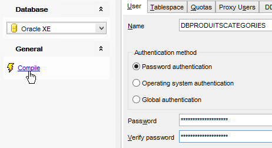 |  |
 |
10.1.3. تثبيت برنامج التشغيل JDBC من Oracle في مستودع Maven
برنامج التشغيل JDBC من Oracle غير متوفر في مستودعات Maven المركزية. يجب تنزيله من Oracle [http://www.oracle.com/technetwork/apps-tech/jdbc-112010-090769.html]:
 |
بمجرد تنزيله، يجب تثبيته في مستودع Maven المحلي. ويتم ذلك باستخدام البرنامج النصي التالي:
"%M2_HOME%\bin\mvn.bat" install:install-file -Dfile=ojdbc6.jar -Dpackaging=jar -DgroupId=com.oracle.jdbc -DartifactId=ojdbc6 -Dversion=1.0
حيث يتم استبدال [%M2_HOME%] بمسار مجلد تثبيت Maven (انظر الفقرة 23.2). بعد ذلك، يمكن استيراد برنامج التشغيل JDBC إلى مشاريع Maven من خلال التكوين التالي:
<dependency>
<groupId>com.oracle.jdbc</groupId>
<artifactId>ojdbc6</artifactId>
<version>1.0</version>
</dependency>
10.1.4. إنشاء قاعدة البيانات [dbproduits]
الآن بعد أن أصبح لدينا مستخدم [DBPRODUITS / dbproduits]، سنقوم بتسجيل الدخول إلى Oracle باستخدام بيانات الاعتماد التالية:
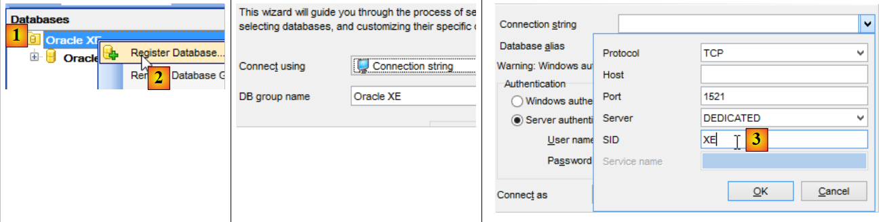 |
 |
- في [6]، استبدل بـ dbproduits؛
- في [9]، قاعدة البيانات [DBPRODUITS] التي سنستخدمها؛
في الفئة [ConfigJdbc] التابعة للمشروع [oracle-config-jdbc]، المعلمات المستخدمة للاتصال هي التالية:
public final static String DRIVER_CLASSNAME = "oracle.jdbc.OracleDriver";
public final static String URL_DBPRODUITS = "jdbc:oracle:thin:@localhost:1521:xe";
public final static String USER_DBPRODUITS = "DBPRODUITS";
public final static String PASSWD_DBPRODUITS = "dbproduits";
public final static String URL_DBPRODUITSCATEGORIES = "jdbc:oracle:thin:@localhost:1521:xe";
public final static String USER_DBPRODUITSCATEGORIES = "DBPRODUITSCATEGORIES";
public final static String PASSWD_DBPRODUITSCATEGORIES = "dbproduitscategories";
يجب عليك تكييفها مع إعدادات Oracle الخاصة بك.
في المشروع [oracle-config-jpa-eclipselink]، يتم تعريف الكيان JPA على النحو التالي:
 |
package generic.jpa.entities.dbproduits;
import generic.jdbc.config.ConfigJdbc;
import javax.persistence.Column;
import javax.persistence.Entity;
import javax.persistence.GeneratedValue;
import javax.persistence.Id;
import javax.persistence.SequenceGenerator;
import javax.persistence.Table;
@Entity(name="Produit1")
@Table(name = ConfigJdbc.TAB_PRODUITS)
public class Produit {
// الحقول
@Id
@GeneratedValue(strategy=GenerationType.SEQUENCE,generator="genSeqProduits")
@SequenceGenerator(name="genSeqProduits",sequenceName="PRODUITS_SEQUENCE", allocationSize=5)
@Column(name = ConfigJdbc.TAB_PRODUITS_ID)
private Long id;
@Column(name = ConfigJdbc.TAB_PRODUITS_NOM, unique = true, length = 30, nullable = false)
private String nom;
@Column(name = ConfigJdbc.TAB_PRODUITS_CATEGORIE, nullable = false)
private int categorie;
@Column(name = ConfigJdbc.TAB_PRODUITS_PRIX, nullable = false)
private double prix;
@Column(name = ConfigJdbc.TAB_PRODUITS_DESCRIPTION, length = 100, nullable = false)
private String description;
...
}
- السطران 18-19: استراتيجية إنشاء المفتاح الأساسي للجدول [PRODUITS] هي [strategy=GenerationType.SEQUENCE]. بالنسبة لـ MySQL، تم استخدام الاستراتيجية [@GeneratedValue(strategy = GenerationType.IDENTITY)]. مع Oracle Express 11g، لا يمكن استخدام هذه الاستراتيجية؛
- السطر 18: يُشار إلى أن المفتاح الأساسي سيتم الحصول عليه عبر مولد أرقام يُطلق عليه غالبًا اسم «التسلسلات»؛
- السطر 19: سيقوم مولد التسلسلات (تشير السمة name إلى المولد المذكور في السطر 18) بإنشاء تسلسل يُسمى [PRODUITS_SEQUENCE] في قاعدة البيانات [dbproduits]. ونظرًا لأننا نريد قابلية النقل بين عمليات التنفيذ JPA، فمن المهم تسمية التسلسل. وإلا، في حالة عدم وجود السطر 19، فإن عمليات التنفيذ الثلاث JPA ستنشئ تسلسلات لا تحمل نفس الاسم، مما يجعل من المستحيل على JPA2 الاستفادة من قاعدة بيانات أنشأتها JPA1؛
نحن جاهزون لتنفيذ التكوين [generic-create-dbproduits-eclipselink]:
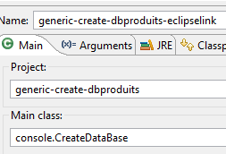 | 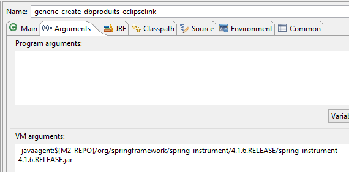 |
يؤدي تنفيذ هذا التكوين إلى إنشاء كائنين:
- جدول [PRODUITS]؛
- تسلسل يُسمى [PRODUITS_SEQUENCE]
 |  |
تكون قيمة DDL في الجدول [PRODUITS] كما يلي:
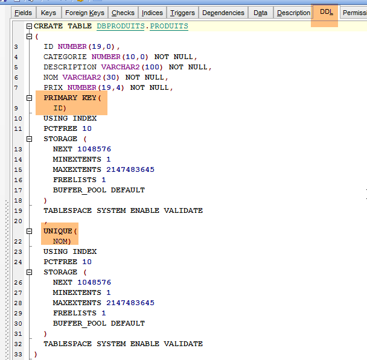 |
المفتاح الأساسي [ID] لا يتم زيادة قيمته تلقائيًا كما كان الحال مع MySQL. إلا أن المشروع [spring-jdbc-03] يفترض أن SGBD يتولى إنشاء المفاتيح الأساسية للجدول [PRODUITS]. سنقوم بإنشاء مشروع trigger أو déclencheur. المشغل (trigger) هو إجراء مخزن داخل المشروع SGBD يتم تنفيذه في ظل شروط معينة. سنقوم بإنشاء مشغل يقوم، عند كل عملية إدراج جديدة، بإنشاء المفتاح الأساسي للمنتج الذي تم إدراجه استنادًا إلى التسلسل [PRODUITS_SEQUENCE] الذي تم إنشاؤه بواسطة التكوين JPA.
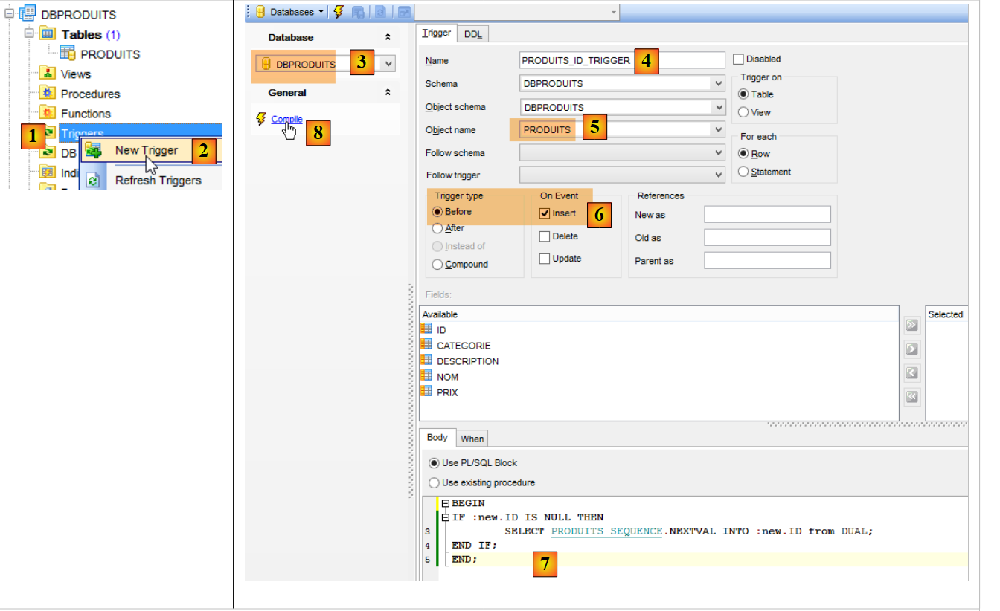 |
- في [6]، سيتم تنفيذ المشغل [PRODUITS_ID_TRIGGER] [4] قبل كل عملية إدراج؛
- في [7]، إجراء مخزن خاص بـ SGBD في Oracle. وهي تشير إلى أن الحقل [ID] في السطر الذي سيتم إدراجه يجب تهيئته بالقيمة التالية من المولد المسمى [PRODUITS_SEQUENCE]؛
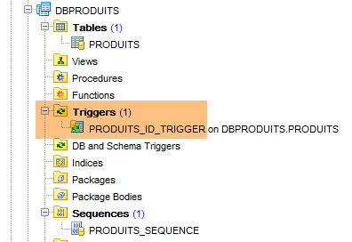 |
أصبحت قاعدة البيانات [dbproduits] جاهزة الآن. قم بتنفيذ الإعدادات التالية:
- [spring-jdbc-generic-01.IntroJdbc01]؛
- [spring-jdbc-generic-01.IntroJdbc02]؛
- [spring-jdbc-generic-03.JUnitTestDao1]؛
- [spring-jdbc-generic-03.JUnitTestDao2]؛
يجب أن تنجح جميعها.
10.1.5. إنشاء قاعدة البيانات [dbproduitscategories]
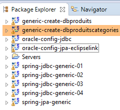 |
نقوم الآن بتنفيذ المشروع [generic-create-dbproduitscategories] الذي سيقوم بإنشاء قاعدة البيانات [dbproduitscategories]. قبل ذلك، في [OraManager]، نقوم بتسجيل الدخول باستخدام بيانات اعتماد [DBPRODUITSCATEGORIES / dbproduitscategories] حتى نتمكن من مراقبة التعديلات التي أُجريت على قاعدة البيانات [dbproduitscategories]:
 | 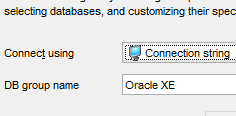 |  |
 | 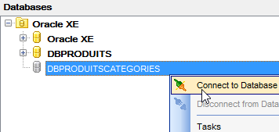 |
 |
تستخدم الكيانات JPA استراتيجيات إنشاء المفاتيح الأساسية التالية:
[Categorie]
public class Categorie implements AbstractCoreEntity {
@Id
@GeneratedValue(strategy=GenerationType.SEQUENCE,generator="genSeqCategories")
@SequenceGenerator(name="genSeqCategories",sequenceName="CATEGORIES_SEQUENCE", allocationSize=5)
@Column(name = ConfigJdbc.TAB_JPA_ID)
protected Long id;
[Produit]
public class Produit implements AbstractCoreEntity {
// الخصائص
@Id
@GeneratedValue(strategy=GenerationType.SEQUENCE,generator="genSeqProduits2")
@SequenceGenerator(name="genSeqProduits2",sequenceName="PRODUITS_SEQUENCE", allocationSize=5)
@Column(name = ConfigJdbc.TAB_JPA_ID)
protected Long id;
[Role]
public class Role implements AbstractCoreEntity {
// الخصائص
@Id
@GeneratedValue(strategy=GenerationType.SEQUENCE,generator="genSeqRoles")
@SequenceGenerator(name="genSeqRoles",sequenceName="ROLES_SEQUENCE", allocationSize=5)
@Column(name = ConfigJdbc.TAB_JPA_ID)
protected Long id;
[User]
public class User implements AbstractCoreEntity {
// الخصائص
@Id
@GeneratedValue(strategy=GenerationType.SEQUENCE,generator="genSeqUsers")
@SequenceGenerator(name="genSeqUsers",sequenceName="USERS_SEQUENCE", allocationSize=5)
@Column(name = ConfigJdbc.TAB_JPA_ID)
protected Long id;
[UserRole]
public class UserRole implements AbstractCoreEntity {
// الخصائص
@Id
@GeneratedValue(strategy=GenerationType.SEQUENCE,generator="genSeqUsersRoles")
@SequenceGenerator(name="genSeqUsersRoles",sequenceName="USERS_ROLES_SEQUENCE", allocationSize=5)
@Column(name = ConfigJdbc.TAB_JPA_ID)
protected Long id;
وكما تم في قاعدة البيانات [dbproduits]، سيتم إنشاء خمس تسلسلات. وتستخدمها عمليات التنفيذ JPA لإنشاء المفاتيح الأساسية. لا تستخدم عمليات التنفيذ JPA المشغلات كما فعلنا سابقًا، بل تستعلم عن التسلسلات للحصول على المفتاح الأساسي التالي. أما نحن، فسنقوم بإنشاء المفاتيح الأساسية أيضًا باستخدام المشغلات. وهذه المشغلات ضرورية لمشروع [spring-jdbc-04].
نقوم بتنفيذ التكوين [generic-create-dbproduitscategories-eclipselink]:
 |  |
ونحصل على النتيجة التالية:
 |
ثم نقوم بإنشاء خمسة مشغلات لإنشاء المفاتيح الأساسية للجداول الخمسة:
 |
يتم ربط المشغلات بالجداول على النحو التالي:
CATEGORIES | CATEGORIES_ID_TRIGGER | CATEGORIES_SEQUENCE |
PRODUITS | PRODUITS_ID_TRIGGER | PRODUITS_SEQUENCE |
ROLES | ROLES_ID_TRIGGER | ROLES_SEQUENCE |
USERS | USERS_ID_TRIGGER | USERS_SEQUENCE |
USERS_ROLES | USERS_ROLES_ID_TRIGGER | USERS_ROLES_SEQUENCE |
 |
يحتاج المشروع [spring-jdbc-04] إلى أن يكون للعمود [VERSIONING] قيمة افتراضية في كل جدول من الجداول التالية:
 | 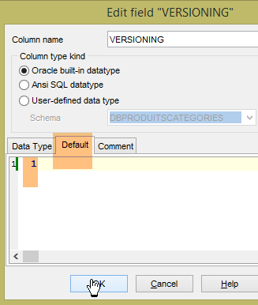 |
يتم تنفيذ ذلك بالنسبة للجداول الخمسة.
الآن، قم بتنفيذ الإعدادات التالية:
- [spring-jdbc-generic-04.JUnitTestDao]؛
- [spring-jpa-generic-JUnitTestDao-hibernate-eclipselink]؛
يجب أن تنجح كلتا الإعدادات.
10.2. تكوين الطبقة JDBC
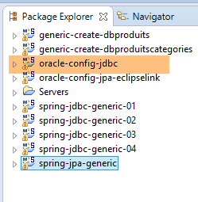 |  |
يقوم المشروع [oracle-config-jdbc] بتكوين الطبقة [JDBC] في بنية الاختبارات التالية:
 |
هذا المشروع مشابه لمشروع التهيئة [mysql-config-jdbc] للطبقة JDBC التابعة لـ SGBD MySQL (انظر الفقرة 3.3). ونعرض هنا التعديلات فقط:
يستورد الملف [pom.xml] برنامج التشغيل JDBC من Oracle:
<project xmlns="http://maven.apache.org/POM/4.0.0" xmlns:xsi="http://www.w3.org/2001/XMLSchema-instance"
xsi:schemaLocation="http://maven.apache.org/POM/4.0.0 http://maven.apache.org/xsd/maven-4.0.0.xsd">
<modelVersion>4.0.0</modelVersion>
<groupId>dvp.spring.database</groupId>
<artifactId>generic-config-jdbc</artifactId>
<version>0.0.1-SNAPSHOT</version>
<name>configuration generic jdbc</name>
<parent>
<groupId>org.springframework.boot</groupId>
<artifactId>spring-boot-starter-parent</artifactId>
<version>1.2.3.RELEASE</version>
</parent>
<dependencies>
<!-- التبعيات المتغيرة ********************************************** -->
<!-- برنامج التشغيل JDBC الخاص بـ SGBD -->
<dependency>
<groupId>com.oracle.jdbc</groupId>
<artifactId>ojdbc6</artifactId>
<version>1.0</version>
</dependency>
<!-- التبعيات الثابتة ********************************************** -->
....
</dependencies>
...
</project>
- الأسطر 18-22: يحل برنامج التشغيل JDBC من Oracle محل برنامج التشغيل MySQL؛
التعديل الثاني موجود في الفئة [ConfigJdbc] التي تحدد معرّفات الوصول إلى قواعد البيانات:
// معلمات الاتصال
public final static String DRIVER_CLASSNAME = "oracle.jdbc.OracleDriver";
public final static String URL_DBPRODUITS = "jdbc:oracle:thin:@localhost:1521:xe";
public final static String USER_DBPRODUITS = "DBPRODUITS";
public final static String PASSWD_DBPRODUITS = "dbproduits";
public final static String URL_DBPRODUITSCATEGORIES = "jdbc:oracle:thin:@localhost:1521:xe";
public final static String USER_DBPRODUITSCATEGORIES = "DBPRODUITSCATEGORIES";
public final static String PASSWD_DBPRODUITSCATEGORIES = "dbproduitscategories";
التعديل الثالث يتعلق بالحد الأقصى لعدد المعلمات التي يمكن أن يدعمها:
// الحد الأقصى لعدد المعلمات في [PreparedStatement]
public final static int MAX_PREPAREDSTATEMENT_PARAMETERS = 1000;
يُنشئ الاختبار [JUnitTestPushTheLimits] أوامر SQL على 5000 منتج، والتي ستُنشئ بدورها أوامر [PreparedStatement] تحتوي على 5000 معلمة. كان الاختبار MySQL يدعم هذه القيمة، لكن قاعدة بيانات Oracle لم تكن تدعمها. قمنا بخفض هذه القيمة إلى 1000، وأصبح الأمر يعمل.
10.3. تكوين الطبقة JPA EclipseLink
 |  |
ملاحظة: قم بتنفيذ [Alt-F5] لإعادة إنشاء جميع مشاريع Maven.
يقوم المشروع [oracle-config-jpa-eclipseLink] بتكوين الطبقة [JPA] في بنية الاختبارات:
 |
هذا المشروع مشابه لمشروع التهيئة [mysql-config-jpa-eclipselink] (انظر الفقرة 7.3) للطبقة JPA Eclipselink التابعة لـ SGBD MySQL. نكتفي هنا بعرض التعديلات فقط:
التعديل الأول موجود في الفئة [ConfigJpa] ضمن تعريف المكون [jpaVendorAdapter]:
// المزود JPA
@Bean
public JpaVendorAdapter jpaVendorAdapter() {
// ملاحظة: الكيانات JPA وتكوين Eclipselink موجودان في الملف META-INF/persistence.xml
EclipseLinkJpaVendorAdapter eclipseLinkJpaVendorAdapter = new EclipseLinkJpaVendorAdapter();
eclipseLinkJpaVendorAdapter.setShowSql(false);
eclipseLinkJpaVendorAdapter.setDatabase(Database.ORACLE);
eclipseLinkJpaVendorAdapter.setGenerateDdl(true);
return eclipseLinkJpaVendorAdapter;
}
- السطر 7: يتم إرشاد التنفيذ JPA إلى أنه سيعمل مع قاعدة بيانات Oracle. وبالتالي، سيتبنى التنفيذ JPA أنواع البيانات الخاصة بـ Oracle وكذلك التنفيذ SQL الخاص بـ Oracle.
التعديل الثاني يتعلق باستراتيجية إنشاء المفاتيح الأولية. وقد تم عرض الاستراتيجية الجديدة في الفقرة 10.1.
10.4. تكوين طبقة Hibernate JPA
 |  |
ملاحظة: قم بتنفيذ الأمر [Alt-F5] لإعادة إنشاء جميع مشاريع Maven.
مشروع [oracle-config-jpa-hibernate] مشابه لمشروع [mysql-config-jpa-hibernate] (الفقرة 6.3) مع نفس التعديلات التي استند إليها نقل مشروع [mysql-config-jpa-eclipselink] إلى مشروع [oracle-config-jpa-eclipselink] (الفقرة 10.3).
وبعد إجراء هذه التعديلات، يجب أن ينجح تنفيذ التكوين [spring-jpa-generic-JUnitTestDao-hibernate-eclipselink].
10.5. تكوين الطبقة JPA OpenJpa
 |  |
ملاحظة: قم بتنفيذ [Alt-F5] لإعادة إنشاء جميع مشاريع Maven.
المشروع [oracle-config-jpa-openjpa] مشابه للمشروع [mysql-config-jpa-openjpa] (الفقرة 8.3) مع نفس التعديلات التي استند إليها تحويل المشروع [mysql-config-jpa-eclipselink] إلى المشروع [oracle-config-jpa-eclipselink] (الفقرة 10.3).
وبعد إجراء هذه التعديلات، يجب أن ينجح تنفيذ التكوين [spring-jpa-generic-JUnitTestDao-openjpa].
 |  |